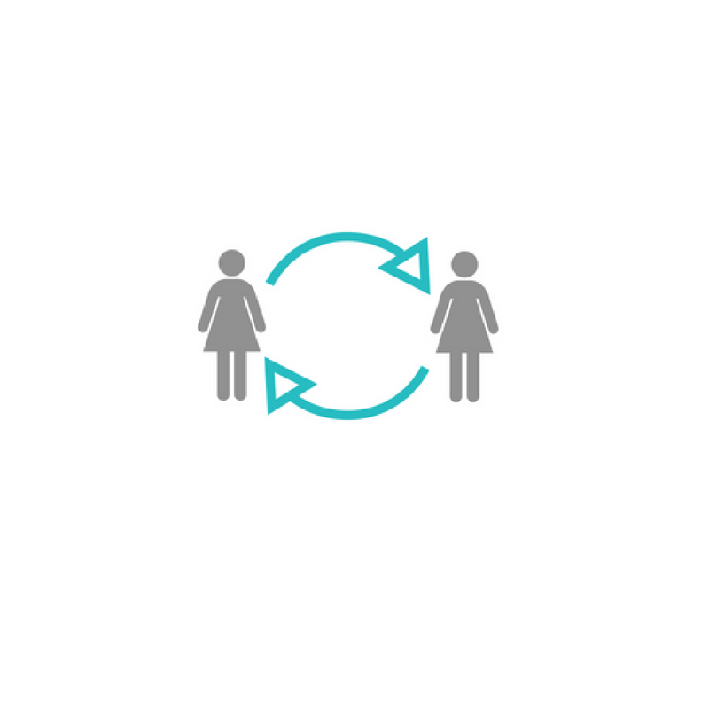
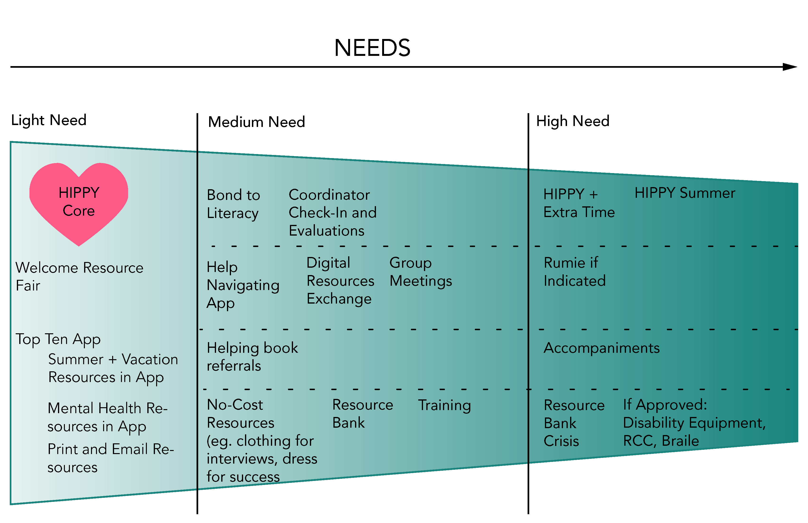
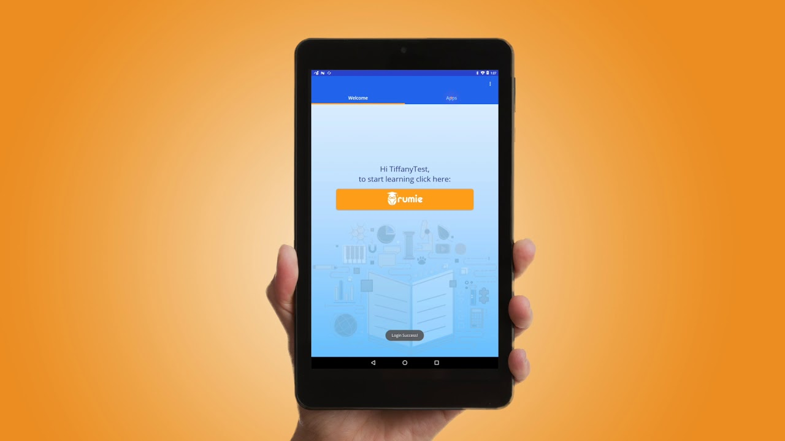
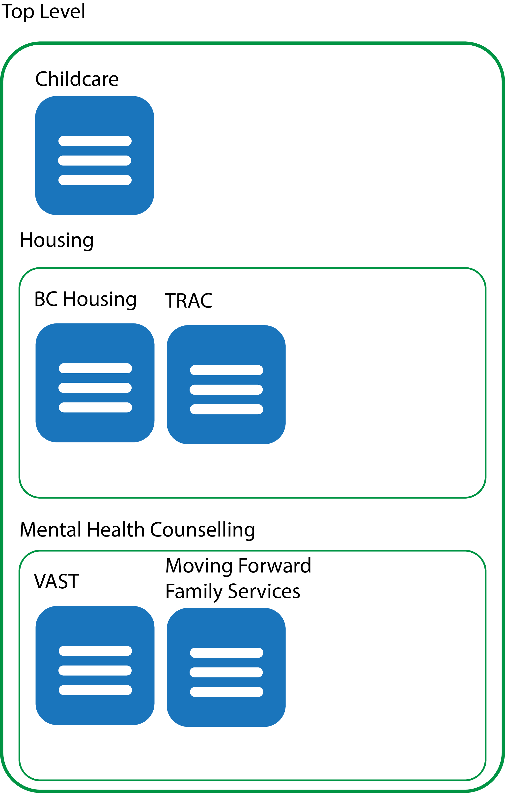
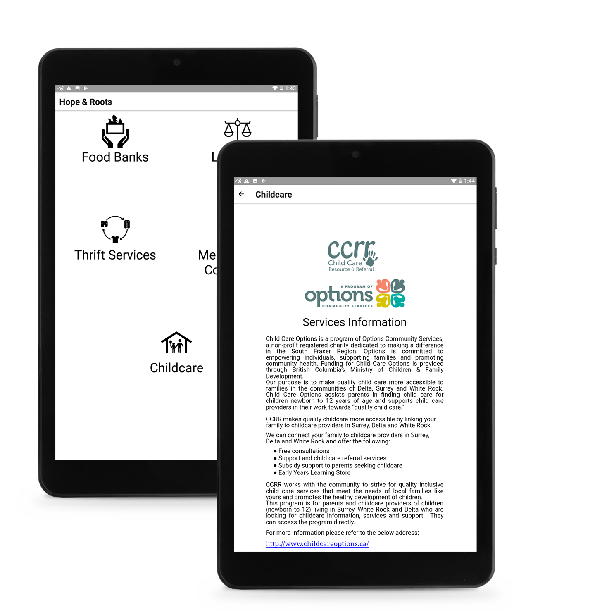

Create a platform that delivers referral information to GAR Mothers as part of the Mothers Matter Centre’s Reviving Hope & Home program.
Tools
React, React Native, Expo, Google Firebase, Google Drive API, Wireframing/Prototyping, Adobe Illustrator, Adobe After Effects
Position
Co-op Position at Mothers Matter Centre
September 2018. 2018-August 2019
Partner Organizations
IRCC, ISSofBC, The Rumie Initiative
Role
Coded application using React, React Native and Expo
Handled technological aspects of project (for Rumie tablets)
Assisted with graphic design
The Mothers Matter Centre
(MMC) is a national, virtual consortium of
organizations that empowers children and families by supporting and
educating mothers with the HIPPY program (Home Instruction for
Parents of Preschool Youngsters). This program employs mothers from
socially-isolated and low income communities, training them as home
visitors who come to the home of mothers in their community to deliver
short activities to do with their preschool-aged child throughout the
week. This prepares children for kindergarten and gets mothers
involved with their child’s education.

As part of their research, MMC found that refugee mothers were more
intensely isolated, and heavily relied on their Home Visitors, often
requiring extra help to access resources and translate curriculum.
Refugee mothers also had more urgent issues to handle including housing,
employment, and mental health challenges related to stress and trauma.
This brought the development of Reviving Hope and Home (RHH), a
program designed for Government Assisted Refugees using core HIPPY
elements in order to make settlement a smoother process.

A diagram of the variety of interventions available in the RHH program
RHH was funded by Immigration, Refugees and Citizenship Canada and
involves several partner organizations, including The Rumie Initiative.
The Rumie Initiative is an organization that gives underserved communities
access to education through Rumie Tablets and LearnCloud. Rumie tablets
are used by mothers and Home Visitors to access the information and
resources they need.

RHH App
I suggested that RHH have its own app, since a key issue before RHH was
HIPPY Home Visitors and Coordinators were being asked by mothers for the
same resources and information over and over again, each time going
through a time-consuming chain of people before a referral is given
to the mother. By centralizing this information in an app, RHH staff
can easily reference the app when a mother needs information. Creating
an app also separates the referrals from the learning and extension
activities we would include on the LearnCloud.
Mobile App
I began development with React Native and Expo, since Rumie tablets
would be used in the program and mobile devices were more common than
others for our target audience. Using React Native with Expo would allow
me to develop for both iOS and Android simultaneously. This came with
great challenges as React Native and Expo are both relatively new tools,
making it difficult to learn and develop independently. Running into errors
often lead to long and sometimes fruitless searches for solutions.
I diligently reached out for assistance on forums online and from
university instructors, and went to developer meetups in the area.
To retrieve service information dynamically, the app accesses Google
Drive and Google Sheets as the resource data may change over time.
Google Sheets structures the categories of resources and which pages
appear in them, and Google Docs provides resource information as an
offline page for later. While unconventional, using the Google Drive
platform provided a way for services partners to make changes to the
app without knowing any coding or database skills.

The app needed to accomodate resources grouped together in several layers of spreadsheets, as shown in this diagram.
Each category has translated titles in arabic and farsi, and an icon
for users who don’t have any literacy skills. All pages and images
are available offline after downloading over wifi. Each resource page
provides users essential resource information including locations,
contacts, languages offered and additional resources and documents.
The resource information was filled in with the help of ISSofBC.
I completed the first version of the app in April 2019.

The final version of the app (to be replaced and expanded on later).
While on extension for the co-op, I attempted to add requested features
based on findings from a focus group with Home Visitors for a new version.
Since time had passed, I was forced to upgrade to a newer version of React
Native and Expo. This broke my code without any clear signs of a solution.
Given the persisting difficulty developing with React Native and Expo and
using Google Drive, I decided to head in a different direction.
Web App
On my last extension in this position, I took a database course in addition
to working part time. This helped me learn how to properly store and handle
the information the RHH app needed. I chose to first make a website
(using React.js) instead of an app to iterate and establish a data structure
more quickly. I used Google Firebase as it allowed me to use their services
for free and it interfaced well to both React and React Native. Using Google
Firebase also gave me the opportunity to make an administrator interface
for when the resource information needed changing, and allows me to have
interactive elements (such as maps or videos).
I also created wireframes to communicate my new
direction to colleagues, and to guide me as I build the website.
One of the best things about React is that it is very easy to build
websites and UI using atomic design.
Atomic design is a concept developed
by Brad Frost, where elements build upon each other to make modular
designs that can be built further to create pages. I applied this
philosophy as I coded and designed the RHH website. For example, a
service page is made of several different dynamic modules (Service
info, Locations, Contacts, Additional info) and within some of those
modules there are also dynamic modules (maps, contact info).
My use of atomic design for the resource information page.
Building this website went much more smoothly than developing for a
mobile app, and allowed me to work more quickly. It also helped me
learn React.js, and ultimately improved my web design skills. (to be updated when website is complete)
Learning Reflection
Through my time at Mothers Matter Centre I was able to learn and explore
React and React Native, and perform user testing and focus groups in a
professional environment. Learning new languages and libraries on my own
gave me a worthy challenge for my computer programming and problem solving
skills. This experience taught me persistence and how to find new ways
to solve an issue. I am thankful for this opportunity with Mother Matter
Centre. It is gratifying to know that my work directly assists RHH staff
in improving the lives of RHH mothers.